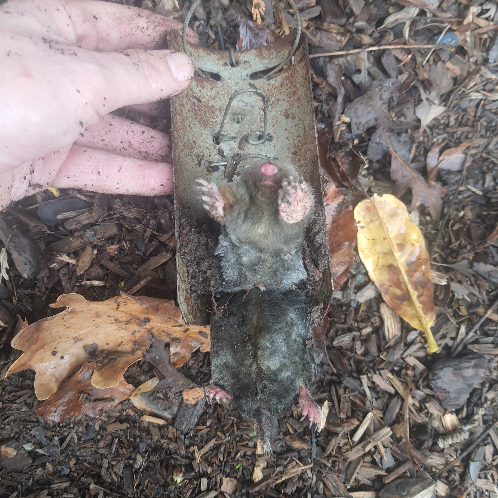

Expert Mole Catching Services in Neath Valley
Dealing with mole hills in your garden, farm, or business premises? Welsh Town and Country provides professional traditional mole catching across Neath, Glynneath, Resolven, Skewen, and the surrounding areas.
Our Specialist Mole Control Solutions:
- Traditional Trapping: We use professional, 100% poison-free trapping methods.
- Garden Protection: Safeguarding residential lawns and floral borders from unsightly damage.
- Agricultural Support: Clearing mole populations on farm land to prevent damage to machinery and livestock feed.
- Estate Management: Maintaining mole-free playing fields and commercial grounds.
Why Choose Our Neath Valley Mole Catcher?
Our mole control prioritize traditional skills that are safe for pets, livestock, and the environment. We avoid gassing or toxic chemicals, focusing instead on accurate, effective trapping that solves the problem at the source.
Available 24/7 for emergency call-outs across the valley.
Service Areas in West Glamorgan
We provide rapid response mole catching to:
📍 Neath • Glynneath • Resolven • Skewen • Briton Ferry • Tonna • Cimla • Crynant • Seven Sisters
Visit our regional branches: